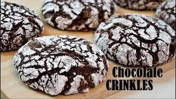

Chocolate Crinkle Cookies
One of my most favourite items to eat from my local bakery are chocolate crinkle cookies.
They are the perfect blend of cake and cookie, and it is extremely chocolatey.
I wanted to bake some of my own, so I followed a recipe by
Savour Easy.
Ingredients
- Cocoa powder 3/4 cup
- Brown sugar 1/2 cup
- White sugar 1/2 cup
- Vegetable oil 1/4 cup
- Eggs 2 large ones
- Vanilla extract 1 tsp
- Flour 1 cup
- Baking powder 1 tsp
- Salt 1/2 tsp
Instructions
- Add cocoa powder, brown sugar, white sugar and vegetable oil in a large bowl.
Mix them until combined.
- Add the eggs and whisk using a machine.
- Add the vanilla extract and continue whisking.
- Sift in flour, baking powder and salt. Mix until combined. Do not overmix.
- Freeze the dough for 1 hour, or chill them for 4 hours.
- Use a tablespoon to make equal sized balls of the dough.
- Roll the balls in powdered sugar and place on a tray lined with baking sheet.
- Bake the cookies at 180 degrees celcius for 10-12 minutes.
- Let it cool completely before enjoying!

image source: Savour Easy
BACK TO HOMEPAGE